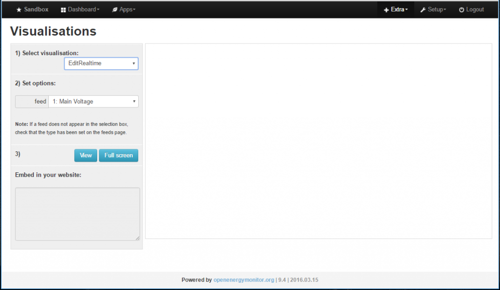

Hi,
Is possible open and edit feed data?
for example /var/lib/phptimeseries/ *.MYD with phpmyadmin or MySQL Workbench???
Thanks
Archived Forum |
|
Open and edit feed "raw" data with phpmyadmin or MySQL Workbench???Submitted by Neni84 on Fri, 15/04/2016 - 07:20Hi, Is possible open and edit feed data? for example /var/lib/phptimeseries/ *.MYD with phpmyadmin or MySQL Workbench??? Thanks » |
Re: Open and edit feed "raw" data with phpmyadmin or MySQL Workbench???
If you are using the standard configuration then only the configuration data gets stored in MySQL. The feed data is stored in data files, as you have already described, located in /var/lib/phptimeseries, /var/lib/phpfina and /var/lib/phpfiwa, depending on the type of feed you are working with.
The only way the I know of to edit these files is using the 'editRealtime' and editDaily' function built into the Visualisations section of EmonCMS.

Regards
Andy Hodges
Re: Open and edit feed "raw" data with phpmyadmin or MySQL Workbench???
I'm using emoncms on a raspberry in low-write mode, configured as a guide to git.
In another topic, that now I can't find it... I read that in low-write mode the 'editRealtime' and editDaily ' function do not work on the historical data...
In fact, if I try to use it I don't correct the data of phptimeseries...
It seems impossible not there an alternative way to edit these data ...
Thanks
Regards
Re: Open and edit feed "raw" data with phpmyadmin or MySQL Workbench???
Hello Neni, yes support for editing historic data needs to be revisited across emoncms. Are you trying to change a daily value? or do you need to edit a large amount of data? Which version of emoncms are you using?
Re: Open and edit feed "raw" data with phpmyadmin or MySQL Workbench???
low-write 9.4 | 2016.03.15 on Rasp-pi Model B
Edit one day of phptimeseries feed data (daily kWh), but in Visualisation "Edit Daily" don't working...
Thanks